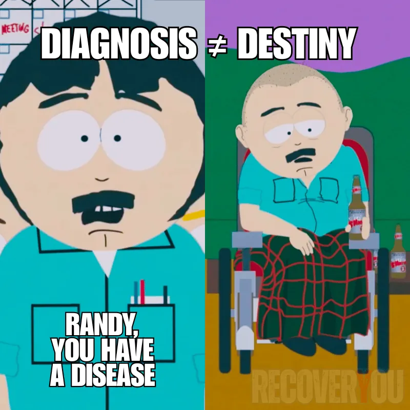
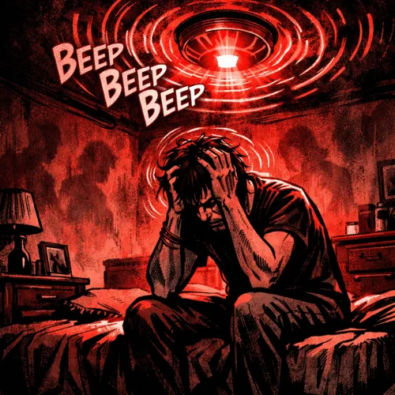

The Disease of Addiction
The Disease, the Disorder, and the Deeper Truth
// The Disease Evolution of Addiction
The word "disease" didn't arrive attached to addiction by accident. It arrived because every generation looks at human suffering through the lens of what it currently understands, and then builds a model around that understanding. Sometimes the model helps. Sometimes it calcifies into doctrine long after the evidence has moved on.
What we've called addiction has shifted dramatically across history. Not because the experience changed, but because our tools for understanding it did. Each new framework was the best available answer to the same ancient question: why do people keep doing things that are destroying them?
The model changed; the person didn’t.
Whatever we’ve called addiction at any given moment in history has been a mirror of what society understood about pain at that time. Not the truth. A reflection of where we were.
The Architecture of Understanding
-
1700s–1920s
The Moral Model: "The Sinner"
Guided by religious doctrine and the Temperance Movement, addiction was a failure of will, a vice, or a sin. The cures were punishment, imprisonment, or prayer. The person was the problem. Full stop.
-
1880s–1940s
The Hereditary Model: "The Defect"
At the height of the Eugenics era, addiction became "bad stock," a genetic curse rather than a moral failing. No longer a choice, but still something to be managed or eliminated. The shame didn't disappear. It just changed its justification.
-
1930s–1960s
The Psychological Era: "The Symptom"
With the rise of psychoanalysis, addiction became a manifestation of arrested development or an "addictive personality." The conversation shifted from bloodlines to the mind, but still circled back to something being fundamentally wrong with the person.
-
1956–Present
The Disease Model: "The Patient"
In 1956, the AMA declared alcoholism a disease. This reduced shame, medicalized treatment, and gave people a framework that didn't require them to simply "try harder." A genuine step forward. Also, as it turned out, an incomplete one.
-
1998–Present
The Trauma-Informed Model: "The Survivor"
Sparked by the 1998 ACE Study, we began to understand that addiction is often not the problem. It's the solution to a problem that came first. A physiological adaptation to a nervous system that learned, for very good reasons, that the world wasn't safe. We're not treating a broken brain. We're working with one that did exactly what it was built to do.
Precision, Not Dogma
This site leans heavily into the Trauma Model, and deliberately so. For decades the trauma connection was ignored, minimized, or dismissed entirely. Leaning hard into it now is an intentional correction for a long history of looking the other way.
But history also shows that once we find a new hammer, everything starts to look like a nail.
The trauma-addiction link is massive, but it isn't absolute. Looking for trauma where none exists, what I'd call "ghost hunting," sends you chasing phantoms instead of the actual problem. Not every addiction story starts with trauma. Enough do that we can't afford to keep ignoring it. Not so many that we should stop looking for other explanations.
-
The "Organic" Path
For the dopamine hijack. The brain that needs retraining.
-
The "Trauma" Path
For the survival adaptation. The nervous system that needs healing.
Where did yours begin? In overwhelm, in conditioning, in repetition, or in something that happened long before substances were ever part of the picture? Context matters. Your Genesis Point isn't a diagnosis. It's a direction. A starting place that can help clarify what kind of care is actually going to work, rather than treating the surface while the root keeps feeding it.

The Power and Peril of a Label
The debate over "disease" versus "disorder" can become its own distraction. The vocabulary matters far less than whether the label actually moves us toward the right kind of care. A word that opens a door is useful. A word that closes one is not, regardless of how clinically precise it sounds.
The real question isn’t what we call it. The real question is: does the label empower you, or does it shrink you?
For some people, the disease label is genuinely liberating. It lifts shame, reframes addiction as something treatable, and removes the demand to simply "try harder" against something that was never a willpower problem. That matters.
For others, the same label quietly installs a ceiling. "Well, if it's a disease, maybe there's nothing I can do about it." The condition stays identical. The story changes. And the story is what determines whether recovery feels possible or pointless.
Which brings us to the real problem with the disease framing. If we're going to call addiction a disease, then the care around it needs to actually behave like it is one. It needs to address root causes, not just symptoms. It needs to demand more than abstinence and a handshake. Otherwise the language is purely symbolic, and we could rename it Chronic Bad Idea Syndrome™ without changing a single thing about the biology, the suffering, or the failure rate.
Image references a scene from South Park, used here for commentary on how diagnostic labels can influence behaviour and recovery. Not affiliated with or endorsed by the original creators.
*Modified and included for educational and commentary purposes. All rights remain with the respective copyright holders.
Mistaking the Solution for the Problem
When we treat addiction as the whole story, we risk doing something that looks like help but functions like misdirection. Addiction does rewire the brain. Genuinely, measurably, in ways that make recovery harder than it would otherwise be. But those changes almost always sit downstream from something older, something deeper. Something that was already doing damage before substances were ever part of the picture.
If you've gotten sober and discovered that life felt worse, that the raw anxiety, the shame, the hollow feeling underneath were more terrifying than the substance ever was, you already understand this. You removed the coping tool. The thing it was coping with didn't go anywhere. It just lost its cover. Learn more here.
That's what the image is trying to show. The fire is out. The alarm is still going. No smoke, no flames, just a nervous system that never got the memo that the emergency is over. That's not a character flaw. That's what untreated trauma looks like in a sober body.
Addiction wasn’t the root problem. It was the desperate solution to one, formed under duress, in the absence of anything better.
For many people, the problem addiction was trying to solve already has a name: Complex PTSD. Not every addiction story starts there. But enough do that treating the substance without asking what the substance was managing isn't just incomplete. It's how people end up cycling through the same doors for years without ever understanding why nothing holds.

If Brain Changes Define Addiction as a Disease, then C-PTSD Is the Prototype
The core argument for calling addiction a disease is straightforward: it produces measurable, dysfunctional changes in the brain. Fair enough. But if that's the standard, then complex trauma doesn't just qualify. It wrote the criteria. C-PTSD demonstrates, with unsettling precision, how early experience can derail typical brain development and how psychological injury leaves physical scars. Not metaphorically. Structurally.
And here's what makes this more than an academic argument: the brain changes of C-PTSD almost always come first. Hypervigilance. Fractured identity. Blunted regulation. A nervous system permanently tuned to threat. None of these guarantee addiction. But they build exactly the kind of internal landscape where substances can take root fast, go deep, and feel, for a long time, like the only thing working.
Addiction rewires systems.
C-PTSD rewrites the operating system.
By the time substances enter the picture, the architecture has often already shifted. Addiction doesn't arrive as the origin point. It arrives as the body's attempt to regulate what trauma already destabilized. Which means that if we're serious about the disease framework, if brain changes are the yardstick, then we have to reckon with the fact that trauma got there first, changed more, and runs deeper.
-
Amygdala
Threat Detector
Locked on high alert, generating hypervigilance and anxiety that have no off switch and no clear target.
-
Prefrontal Cortex
Control Tower
Underactive, weakening impulse control, emotional regulation, and the capacity to choose deliberately rather than react automatically.
-
Hippocampus
Memory Filer
Shrinks under chronic stress, blurring the boundary between past danger and present safety until the body can no longer reliably tell the difference.
-
Default Mode Network
Sense of Self
Fractures, feeding dissociation, identity instability, and the specific feeling of being a stranger inside your own life.
Addiction hijacks the brain's motivation system. C-PTSD hijacks the brain's survival system.
One is a siege on your life.
The other is a siege on your self.
This is where the confusion compounds. Addiction becomes the visible crisis, the thing everyone sees, labels, and tries to treat. Trauma runs underneath it, doing most of the driving while nobody looks. Without trauma work, sobriety can feel like tearing down your shelter in the middle of a storm. You've removed something real. You just haven't replaced what it was protecting you from.
So here's the argument turned back on itself: if the disease model rests on the premise that brain changes are what make something a disease, then the most honest application of that framework isn't addiction. It's the trauma that preceded it, shaped it, and in many cases, made it feel like the only rational response to an irrational amount of pain.

This isn’t about which condition is “worse.”
It's about understanding the order of injury.If addiction is like an infection, something triggered by exposure to an external agent, then C-PTSD is closer to an autoimmune disorder of the psyche.
The survival system, conditioned by years of threat, begins to turn inward. It attacks the very capacities meant to protect you: emotional regulation, secure attachment, the ability to feel safe in your own skin.
The defense becomes the damage.
And addiction, in this analogy, often functions like a secondary infection on an already weakened system. Trauma primes the ground, distorts the defenses, and creates the exact conditions where substances can take hold. What looks like the disease is often just the visible symptom of a deeper autoimmune-style breakdown.
Why This Distinction Is Everything
This isn't just an academic exercise.
It's the difference between managing symptoms and healing the wound that created them.
Treating addiction without addressing trauma is like renovating a house that's actively on fire. It's why "just don't use" so often fails, and why relapse feels inevitable. Addiction was never the original problem. It was the mask worn over the problem.
Recognizing the trauma link does four critical things:
-
Shifts the Focus: from "What is wrong with me?" to "What happened to me?" That's not a small linguistic shift. It's the difference between shame and understanding. And understanding is where the actual work begins.
-
Validates the Struggle: it explains why sobriety alone can feel unbearable, and why removing the substance sometimes makes everything worse before it gets better. Willpower was never the variable. It was never a fair fight.
-
Exposes What's Actually Driving It: addiction was the visible costume. Trauma was wearing it. Until the wound underneath gets treated, the cycle doesn't end. It just restarts with a different substance or a different behaviour and the same root cause.
-
Restores Real Agency: you aren't defective. You were injured. And injuries, unlike character flaws, can actually be treated. That reframe is more than compassionate. It's the most accurate description of what happened.
Calling addiction a disease was a milestone. It reduced shame, opened treatment doors, and gave people a framework that didn't demand they simply "want it more." That mattered. It still matters. But a stepping stone is not a destination, and treating it like one has cost us decades of more precise, more effective care.
The most honest thing we can say right now is: “This model was the best we had, and it has to keep getting better.”
Not all addiction is rooted in trauma. But enough of it is that ignoring the link isn't a neutral position. It's a costly one. Treating the label without treating the wound underneath is how people spend years in and out of programs and never quite understand why nothing sticks.
The real work isn't just removing the substance. It's understanding what the substance was doing there in the first place. What it was managing. What it was masking. What it was trying to make bearable.
That's where the actual recovery begins. Not at the symptom. At the source.
Where to Next?
Follow the next step in order, or branch out into related topics.
- American Medical Association. (1956). Hospitalization of patients with alcoholism. JAMA, 162(8), 750. Also: Jellinek, E. M. (1960). The Disease Concept of Alcoholism. Hillhouse Press. The 1956 AMA report formally recognized alcoholism as a disease requiring medical treatment — the institutional turning point away from purely moral framing. Jellinek's foundational text provided the scientific scaffold for this classification, identifying stages of alcoholism and establishing the biomedical rather than moral framework that underpins the disease model to this day. View Jellinek on Goodreads
- American Society of Addiction Medicine (ASAM). (2019). Definition of Addiction. ASAM's formal definition characterizes addiction as a primary, chronic disease of brain reward, motivation, memory, and related circuitry — explicitly recognizing genetic, psychosocial, and environmental factors rather than framing it as purely behavioral or moral failure. This definition forms the institutional basis for the brain disease model discussed on this page. View ASAM Definition
- Volkow, N. D., Koob, G. F., & McLellan, A. T. (2016). Neurobiologic advances from the brain disease model of addiction. New England Journal of Medicine, 374(4), 363–371. Core review of the biological underpinnings of addiction — documenting how repeated substance use progressively alters reward, stress, and executive control circuits in ways that persist into abstinence, providing the neurological rationale for the disease model while also illustrating its limitations when the trauma dimension is absent. View via DOI
- Heyman, G. M. (2013). Addiction: A Disorder of Choice. Harvard University Press. Challenges the strict disease framework — arguing that context, learning, and voluntary control play a greater role than the biological model acknowledges, and that framing addiction purely as disease may underestimate the role of environment and motivation in recovery. View on Goodreads
- Lewis, M. (2015). The Biology of Desire: Why Addiction Is Not a Disease. PublicAffairs. A neuropsychologist's argument that addiction is a deeply learned adaptation shaped by neuroplastic change rather than a discrete pathology — emphasizing how the same brain mechanisms that drive addiction also drive recovery, and why the disease label may inadvertently undermine agency. View on Goodreads
- Khantzian, E. J. (1997). The self-medication hypothesis of substance use disorders: a reconsideration and recent applications. Harvard Review of Psychiatry, 4(5), 231–244. Foundational paper proposing that substance use is motivated primarily by the need to regulate distress rooted in trauma and emotional dysregulation — arguing that specific substances are chosen for their specific pharmacological effects on particular emotional states, and that treating addiction without addressing this underlying pain leaves the root cause intact. View on PubMed
- Van der Kolk, B. A. (2014). The Body Keeps the Score: Brain, Mind, and Body in the Healing of Trauma. Viking Press. Connects trauma's imprint on the brain and body with addiction, dissociation, and the failure of purely abstinence-based models — arguing that recovery from addiction rooted in early adversity requires addressing the somatic and neurological legacy of that adversity, not only the substance use itself. View on Goodreads
- Maté, G. (2008). In the Realm of Hungry Ghosts: Close Encounters with Addiction. Knopf Canada. Integrates neuroscience, trauma theory, and compassion-based recovery — reframing addiction as an adaptive coping mechanism shaped by early adversity and unmet attachment needs, and arguing that the disease model, while useful, is incomplete without this developmental and relational context. View on Dr. Maté's Site
- McEwen, B. S., & Morrison, J. H. (2013). The brain on stress: vulnerability and plasticity of the prefrontal cortex over the life course. Neuron, 79(1), 16–29. Explains how chronic stress and trauma reshape brain systems central to addiction — particularly the prefrontal cortex — impairing impulse regulation and emotional control in ways that increase vulnerability to compulsive substance use and make standard behavioral interventions less effective without addressing the stress biology. View on PubMed
- Koob, G. F., & Schulkin, J. (2019). Addiction and stress: an allostatic view. Neuroscience & Biobehavioral Reviews, 106, 245–262. Reviews how repeated stress produces allostatic load that drives changes in corticotropin-releasing factor throughout the brain — impacting all three stages of the addiction cycle (binge/intoxication, withdrawal/negative affect, and preoccupation/anticipation) and explaining why dysregulated stress neurocircuitry is a core mechanism in the transition from voluntary use to compulsive addiction. View on PubMed
These sources reflect the historical, neurological, and trauma-informed perspectives explored on this page — showing how our understanding of addiction has evolved from moral failing to disease, and toward adaptation and recovery.